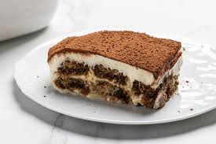

Il tiramisù

Descrizione
Il tiramisù è un dolce tipico della cucina italiana, composto da savoiardi, caffè, mascarpone, uova e cacao.
Ingredienti
- 500g di mascarpone
- 300g di savoiardi
- 300g di zucchero
- 6 uova
- q.b. caffè
- q.b. cacao
Preparazione
- Separare i tuorli dagli albumi.
- Montare gli albumi a neve.
- Montare i tuorli con lo zucchero.
- Unire il mascarpone ai tuorli.
- Unire gli albumi montati al composto di mascarpone.
- Inzuppare i savoiardi nel caffè.
- Comporre il tiramisù alternando strati di savoiardi e crema.
- Spolverare con cacao.
Torna alla home